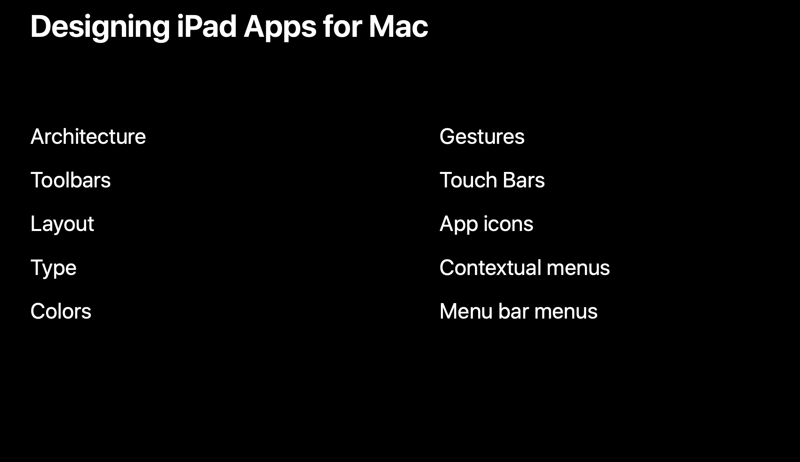
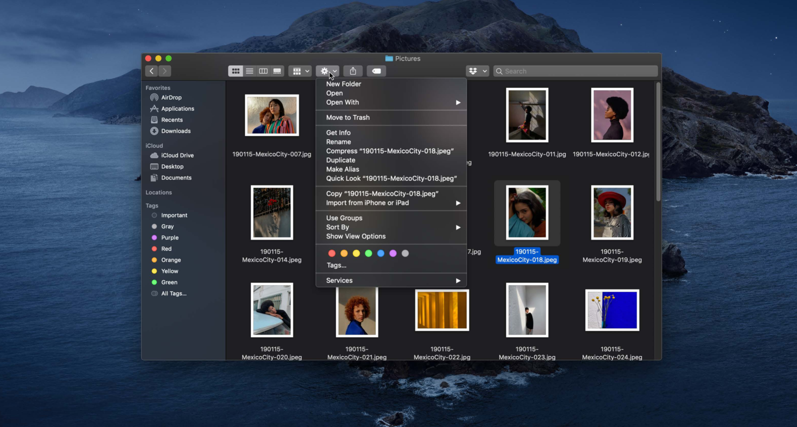
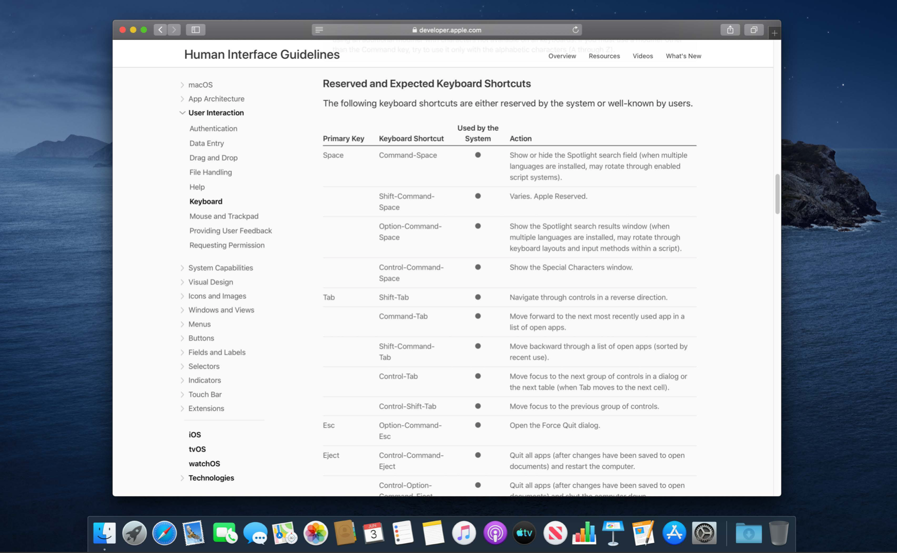

把 iPad 上的 app 带到 Mac 中去的上篇取材于 iOS HIG，从大的层面讲述了移植 app 到 Mac 中去的一些设计规范，取材于 WWDC session 的下篇将用更多的示例和图片主要围绕架构、工具栏、布局、排版、颜色、手势、触控栏、app 图标、情景化菜单、菜单栏菜单十个部分讲述更多移植的细节。
目录
第一步：提供一个可靠的基础
- 你的 iPad app 应该支持自动布局功能，因为正如我们所知道的，Mac 的窗口可以被随意调整大小。
- 类似的，如果你的 app 支持拖放，你离出色的 Mac app 就更近了一步。我们期望 Mac 上的每一个东西都是可拖拽、可释放的。
- 像拖放功能一样，iPad app 在独自的窗口可以打开文档的这种多窗口能力也期望在 Mac 中实现。如果你的 iPad app 支持多窗口功能，你将会在 Mac app 中自动获得这项能力。
轻松实现
为了把 iPad app 带到 Mac 上更简单，许多 iOS 的界面和交互会自动适配成等价的 macOS 的样式。
- iOS 的分隔视图（split view）会被绘制成 Mac 上的分隔视图（split view）；
- 系统提供的 UI 像是文件浏览器（file browser）和活动视图（activity view）会被映射到等价的样式；
- iOS 上的编辑菜单（edit menu）和情景菜单（contextual menu）会被自动变成 Mac 上的情景菜单（contextual menu）；
- 复制和粘贴（copy and paste）、富文本编辑（text editing）、按键焦点（key focus）也同样轻松地转化到 Mac 上。
在上面这些例子中，iOS 和 macOS 之间的映射都是很直接的。然而，在 macOS 和 iOS 之间会有一些核心区别。设计一个适合每个平台的 app 需要理解和考虑到这些区别。最大、最关键的区别是 iOS 是根据触控来设计的，而 Mac 是根据键盘和鼠标输入来设计的。

为触控而设计包括提供一个更大、更容易操作到的触控目标，特别是在你到处走动时。在 Mac 上，使用触控板或者鼠标可以提供物理稳定性和更好的控制。因为光标很小，人们可以用更好的精确度瞄准和控制交互对象。
更小的控件也允许 Mac 的 UI 拥有更大的信息密度、更好的控制密度。所有的 iOS 设备都支持像是拖动（pan）、旋转（rotate）、pinch（捏合）这些的多点触控手势。有一些 Mac 的配置没有多点触控输入方式。
所以如果你的 app 中的任何交互或者任何动作需要依赖手势输入才能被执行，你就必须为 Mac 寻找替代解决方案。
当 iPhone 以竖直方向被我在手中时，把控件放在屏幕中间或者底部会让人们更容易触及到，对于横屏模式下的 iPad 也是这样。
人们倾向于紧握住一边，所以把控件放在左边或者右边会让人们更容易操作到那里。明显的，人们在使用 Mac 时不会用手拿着设备，把控件放在屏幕底部或者左右边缘没有任何人体工程学的益处。屏幕的每一块区域都和其他区域一样容易被操作到。
说到屏幕，你需要考虑你的 app 在 1x 非视网膜屏幕上的显示效果。特别关注那些文本中的图形，让它们看上去清晰可读。
交互模型和设计模式
通过以上，可以基本理解触控设备和桌面电脑的不同。但不清楚的是在 iOS 和 macOS 之间的交互模型和设计模式具体有何不同。这些不同是成功把你的 iPad app 的设计转换到 macOS 上去的关键。

架构
对于 app 的设计来说，没有什么比它的架构是怎样的还重要。一个有逻辑的、直观的 app 结构可以帮助人们发现他们寻找的，并且让导航更顺畅。iOS app 倾向于通过三种方式来组织结构。
有一些 app 使用 tab 来让信息分隔成几个一级的 tab；
有一些 app 在 table view 中展示一个一级的列表；
有一些基于文档的 app 在一级使用文档浏览器的 UI 样式。
你的 app 可以选中其中一种。简单的方法就是寻找最接近的 macOS 等价样式并使用它。
对于使用 tab 的 app，你可以在 Mac 的工具栏上使用分段控件（segmented control）。
如果你的一级导航是一个主列表，你什么都不用做，它将以同样的方式出现在 Mac 上。
文档浏览器 UI 样式的 app 也是同样如此。
从 iOS 到 macOS 上这种 app 结构的直接转换可能是正确的方法。它可以提供一个核心好处，对于那些已经熟悉你的 iOS app 的人们来说，你的 Mac 版本的 app 他们也会马上熟悉。
另一方面，你可能会错过一个简化导航的重要机会。在 Mac 上，边栏（sidebar）是一个重要的导航工具。它更容易承载大量的选项，这些选项可以被分组、被标签以帮助提供额外的情景信息、让它们更容易被用户看到。所以，如果你现在有一个 tab 样式的 app，你可以通过分段控件呈现这些 tab，也可以把它们放到边栏中。
下面这个 app 的转换看上去不太合适，因为只展示了四个选项，没有有效利用屏幕空间。但如果这四个 tab 有次级 tab，你可以把他们直接展示出来。这极大地扁平化了 app 的层级，允许人们可以直接在次级 tab 间移动。甚至可以允许用户根据需要自定义这些条目。
如前面所看到的，如果你的 app 有一个一级的列表或者 table view 用来在不同部分间导航，直接转换它。分隔视图是在 Mac 上获得边栏的方式。你只需要开启半透明的背景就好。
如果你的 app 在一级中展示了一个文档浏览的 UI 样式，你可以使用一个边栏提供对文件夹的永久访问或者展示已保存的搜索结果。
如果你使用了边栏，这里有两点需要记住。第一点，边栏让人们可以访问 app 中或者文档集合中的某些位置，但并不意味着直接展示文档或者其它类型的内容。
第二点，边栏在帮助用户理解哪个窗口或者哪个 app 拥有核心焦点时扮演了重要的角色。当当前窗口是活跃状态时，图形、选项高亮、边栏背景看上去是半透明的。当窗口变成不活跃时，这个效果就会消失。
知道哪个窗口会响应键盘输入是非常重要的，为了支持这个效果，使用一个半透明的背景。
不要用固定的颜色或者图片填充边栏。对于选项高亮状态，使用系统选择的颜色而不是一个自定义的颜色或者 app 的主题色。
通常情况下，你应该使用有虚化效果的模板图片（template image）而不是全色图片，除非真的有必要。
工具栏
工具栏（tool bar）是 Mac app 中非常常见的地方，你可能想要在你的 app 中使用一个工具栏。把控件放在工具栏上可以让它们更容易被发现。也会创造一个更稳定的用户体验。
工具栏可以创造一个从上到下的信息流，这也是 Mac app 的规范。
如果你的 iPad app 有任何的操作始终位于屏幕底部，如果在 Mac 上也这样做就会有问题。Mac 的窗口是可拖动的，Mac 窗口的底部可能会拖到屏幕外部或者 Dock 下面，因此这会导致一些可用性问题。
当把操作放置在工具栏上时，记住一个工具栏的内容不会基于 app 现在处于的位置而发生变化。如果在 app 的某个位置某个动作不可用，它们可以被置于禁用状态。如果没有任何东西被选中而被可执行，那工具栏上的操作就是被禁用的。
如果某些动作只与 app 中的某些动作相关，它们可能不适合放在工具栏上。你可以在一个操作菜单（action menu）里提供情景化相关的操作，操作菜单里的操作可以基于当前视图或者选中项动态变化。
例如，在 Finder 窗口中文件被选中，操作菜单会包括那些可以操作文件的操作；什么都没有选中时，操作菜单会包括那些操作当前文件夹的操作。操作菜单并不意味着包罗万象，所以选择好该放进哪些操作进去。

布局
Mac 的窗口比 iPad 大得多，你会拥有更大的空间进行发挥，特别是在全屏下。但要利用好所有的空间需要一个为 iPad 最优化的布局。
一些 iPad app 的布局直接放大了 iPhone 的界面，在 iPad 上看上去很糟糕，在 Mac 上特别是在全屏下看上去更糟糕。
为 iPad 和 Mac 最优化布局需要一些特别的考虑。对于两边的设备，可读内容边界可以让每一行文本不会太长以保持可读性。
把内容切分成多列可能是最大化信息密度的一个好方法。
使用分隔视图或者主要-详情视图是利用好更宽屏幕的好方法。分隔视图通过同步展示一系列对象和选中对象的详情来简化导航，这可以减少在 app 层级间不断进去出来的需要。如果在你的 app 中有一个分隔视图，不需要任何修改就可以在 Mac 中工作的很好。

让你的 app 的布局在 Mac 上工作的很好可能是为 Mac 和 iPad 识别和解决布局问题的最好方式。
排版
在 macOS 中，基准字体字号是 13pt，大多数的控件和文字标签都会是这个大小。而在 iOS 上，基准字体字号是 17pt。在 Mac 上展示一个 17pt 字号的 iOS app 会看上去不合适，文本会显得太大了。
为了保持 Mac app 之间的一致性，系统会缩放内容区域到原来的 77%。这意味着你不需要重新设计或者重新编码 Mac app。
但是这样也会在设计上带来一些复杂度。当创建 iPad app 的原型时，你会想要重新创建 77% 缩放的样式。例如在 Photoshop 中，你可以把整个内容区域放进一个智能对象，并缩放到原来的 77%。同样的处理方式也可以在 Sketch、Adobe XD 或其他设计工具中实现。
在 macOS 中，app 倾向于只使用几个不同的字体字号。而在 iOS 中，文本样式更加动态多变。文本样式（text style）提供了非常多的字号选项。使用最小的字号如「footnote」、「caption one」、「caption two」会让文本在 Mac 上不易读。即使是 Mac 上的「mini」字体样式的字号也总是很小。所以你可能需要增大一些文本的字号以让其可在 Mac 上可读。
还有最好一点需要注意，Mac 并不支持动态类型（dynamic type），Mac 会直接使用 iOS 上的「Large」样式，并将其缩放到 77%。
颜色
在 iOS 中，颜色会被用来表示元素是可交互的或者高亮选中的条目，一些 app 还会用颜色绘制内容区域和栏的背景色。而在 Mac 上，事情有一点点不同。

对于用户来说，同时打开有多个内容的多个窗口或者在桌面上打开多个文件或文件夹是非常普遍的。如果 macOS app 像 iOS app 一样大幅度使用颜色的话，用户体验就会支离破碎。
Mac 的界面应该是更加中性的。它们不应该与呈现给人们的内容相竞争。同时半透明效果会让你的 app 与 Mac 生态系统融为一体。人们很喜欢自定义自己的 Mac 桌面壁纸，半透明效果会影响这些 app 的显示效果，给用户带去一种紧密结合的体验。类似的，在 Mac 上高亮颜色也是用户的一个偏好设置。如果你的 app 使用了一个不同的颜色去高亮选中的条目，这将会很不合适，并且对用户造成困惑。
在颜色使用上，iOS 其实也正在逐渐变得像 macOS 一样。通过多任务，多个 app 同时展示会变得越来越平常。一个一致的视觉外观可以提供一种统一的用户体验。通过深色模式，人们希望更好地控制 app 在设备上的显示样式。如果 app 不能相应用户的偏好设置，这会让用户觉得 app 离群了。
描边颜色也在发挥着一部分作用，以前习惯于有一个描边颜色的 stepper 和 segemented control 在 iOS 13 中也变得更加中性。
你可能已经知道，iOS 13 上的系统颜色已经焕然一新（如果你还不知道，可以点击这里查看 iOS 13 的系统颜色新变化）。如果你在 iOS app 中使用这些颜色，它们会在 macOS 中的浅色和深色模式中被映射到对应的等价样式。
手势
iOS UIKit 中的手势将会自动映射成对应的鼠标或触控板事件。轻点会被映射成鼠标点击，长按会被映射成鼠标点击并按住，拖动会被映射成用鼠标拖动。滑动手势会被映射成在合适的方向拖动。在触控板上，可以实现捏合和旋转，但有一些小小的不同。在 iPad 上，捏合和旋转会使用触控点之间的中间点去控制对象或者旋转以及缩放。在 Mac 上，光标的位置会被用来达成这个目的。屏幕边缘滑动不会被映射到 Mac 上去。
一些手势不会被转换到 Mac 中去，例如下拉滚动视图完成刷新的这个手势就不会很好地被转换到 Mac 中去。
对于任何由手势输入触发的操作，你需要找到一个替代解决方案从而去执行相应操作，你可以使用许多栏菜单、情景化菜单或者工具栏上的按钮，抑或是上面的所有方法。
在 Mac 上你可以接收到鼠标 hover 事件，你可以利用这个去展示光标所在处的额外信息。例如，在「股票」app 中，你可以在 iOS 上通过长按股票图表显示特定时间点的价格，而在 macOS 中，鼠标悬浮在上面并滚动就可以查看不同时间点的价格。你应该利用好 hover 状态，这是一种对于人们很有用的不需要改变选择状态就可以获得信息的方式。
触控栏 Touch Bar
你可以为你的 iPad app 在 Mac 上创建触控栏功能。触控栏是一个非常好的方式用于展示情景化信息，你可以基于人们在 app 的不同区域或者选择的对象显示不同的触控栏。大多数的触控栏组件和控件都可以使用。
App 图标
Mac app 的图标是 app 的门面。它们帮助人们分清安装的成百上千的 App，它们会出现在许多地方，dock 栏、app switcher、Launchpad、应用程序文件夹等等。默认情况下，你的 iOS app 的图标是由一个一致的圆角矩形包裹着。在 Mac 上，一个微弱的投影会被应用到图标上以保持与其他 Mac app 图标的一致。你可以阻止这个行为或者重新创建一个新图标。
我鼓励你的重新创建一个新图标。因为 Mac app 的图标如此随处可见，它值得你重新创建一个。相比于 iOS app 图标，Mac app 图标有着更多的个性。它们不是简单的用圆角矩形包裹，Mac app 的图标有着独一无二的轮廓以和其他图标区分开来。即使在很小的尺寸下，这个轮廓也可以帮助用户区分不同的 app。
在 1x 显示器上，在 Finder 中的 app 图标只有 16 像素高和宽。在这个尺寸下，每一个像素都应该斟酌使用。在最小的 app 图标尺寸创建一个像素提示性图标是一个好主意。
Mac app 的图标会被创建的更像物理真实世界的物体，许多 Mac app 图标使用 3D 软件渲染而成，所以它们有着现实的光线效果和材料质地。
如果你想往这方面考虑，，可以在 macOS HIG 中查看关于相机角度和光源的更多指导。
情景化菜单
情景化菜单是 Mac 界面的无名英雄。它让人们知道一个对象可以执行什么操作。在 Mac 上，人们期望情景化菜单无处不在。所以从逻辑上来说，你应该将情景化菜单添加到各个地方。你 app 中的任何对象都应该有一个相关的情景化菜单，包括用户最常使用的操作。

如果你为你的 iOS app 已经添加了情景化菜单，它将会自动转化为 Mac 的情景化菜单。对于编辑菜单也是这样。
无论是为 iOS 还是 macOS 设计情景化菜单，你需要遵守下面这些基本准则。
- 避免用太多选项淹没用户：太多的选项会让用户很难找到他想要找的操作，导致花很长时间去浏览，要将焦点放在最情景化、最相关的功能上；
- 保持简洁：一个单词的文字标签通常会很简洁。
- 传达动作：当给文字标签命名时，使用动词或者动词词组表明操作被执行后的结果；
- 仔细排序：命令的顺序也很重要，把最重要的放在最上面，把相关的成组摆在一起；
- 使用分隔线成组：使用分隔线让命令间的关系更确切，把命令分组可以帮助人们快速跳过一系列与想要做的事不相关的命令；
- 使用次级菜单管理菜单的复杂度：使用次级菜单可以控制菜单的长度、隐藏不相关的操作。次级菜单用一个箭头来表示。
菜单栏菜单
每一个 Mac app 都有菜单栏，菜单栏是 Mac 体验的核心，可以追溯到 1984 年。菜单栏是让电脑容易使用的核心。你可以通过下面的练习来开始设计 app 的菜单栏：写下人们在你的 app 中可以执行的所有操作，记下哪些对象会被这些操作影响到。
每一个在你 app 中的操作都应该出现在菜单栏中，这让人们更容易发现和给菜单选项分配键盘快捷方式。一旦你把所有的操作分好类，你需要找一个地方承载它们。macOS 包含一系列标准化菜单栏，如 app 菜单可以控制 app，文件菜单可以操作文件，编辑菜单可以操作内容或者文件中的对象，格式菜单可以对文本修改格式，查看菜单可以自定义窗口的外观，窗口菜单可以控制窗口，帮助菜单可以获取帮助。对于许多 app ，这些标准化菜单很有用。
然而，有时候也需要提供额外的自定义菜单。如果在你的 app 中有一系列核心对象对应一系列操作，你应该考虑在一级添加一到两个自定义菜单。例如在「邮件」app 中，有两个主要的对象类型，邮箱和邮件，对于这俩对象有一系列对应的会被执行的操作，这些操作不会在其他对象上被执行，所以可以为这些对象添加对应的菜单栏菜单。
另一方面，通过一系列工作流去组织操作也是很有帮助的。在 Keynote 中，有一系列不同的对象类型可以被添加到幻灯片中，对于它们可以执行一系列操作，如对齐、分布、锁定、成组、向前或向后移动。因为所有的这些操作影响这些对象的方式差不多，所以可以基于工作流把它们放在一个菜单中。
一旦你决定了菜单栏中包含了哪些自定义菜单，你需要在其中创建菜单。上面讲到的关于情景化菜单的设计规范同样适用于设计菜单栏菜单。
补充一点，菜单栏菜单的结构应该是稳定的，在 app 运行后不应该再添加或删除菜单。像工具栏上的菜单一样，当菜单不可执行时可以设置为禁用状态。一个稳定的菜单栏系统会帮助人们搞清楚命令在哪里，即使这些命令现在不可用。当看到一个命令不可用时，这对人们来说也提供了有用的信息。
关于菜单栏还有一点，为常用命令分配键盘快捷方式。重度键盘用户会因此感谢你，在 iPad 和 Mac 上键盘快捷方式都可使用。当分配键盘快捷方式时，总是跟随惯例。你可以在 macOS HIG 中找到一个长长的列表写明标准键盘快捷方式。当使用一个从未用过的新 app 时，可以使用你早已熟悉的键盘快捷方式得到期望的结果。

小结
Mac 提供给你一个机会，让你的 app 更加强大、更加实用、更加有效率，但是这个机会同时也包含着一些需要深思的设计抉择，并且需要一些努力。
参考链接
- Designing iPad Apps for Mac - WWDC 2019 - Videos - Apple Developer
- iPad Apps for Mac - iOS - Human Interface Guidelines - Apple Developer
如果你觉得这篇文章对你有所帮助，欢迎请我喝杯咖啡，感谢你的支持😁